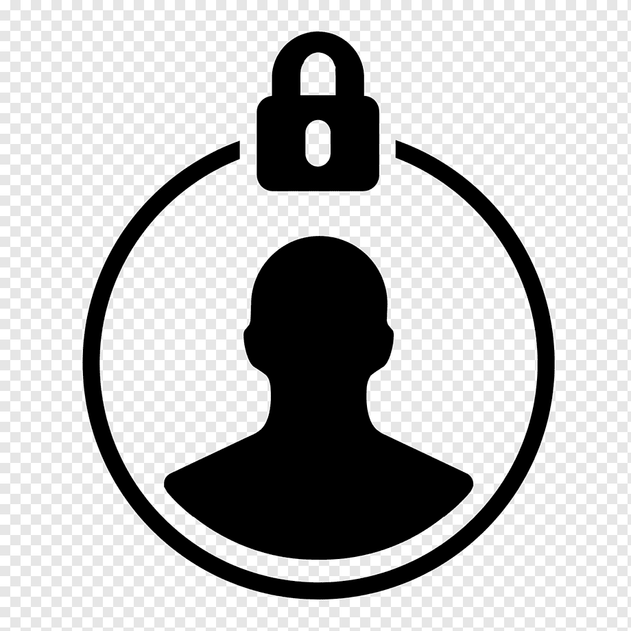

Explorez

Le label
Nous avons créé un label pour mettre en valeur les producteurs qui jouent la carte de la transparence. Nous avons définis 4 axes d'ouverture :
- Fournisseurs & matières premières
- Processus de fabrication
- Structure des coûts & marges
- Impact environnemental, Durabilité et réparabilité

La carte
Nous tentons de recenser les producteurs locaux de qualité. Plus de 5000 producteurs sont sur la carte, classés par catégorie. Parcourez la carte pour trouver les producteurs de votre région.
La carte

Nous soutenir
- OpenProduct est un projet à but non-lucratif. Si vous pouvez faire un don ici, soyez assuré de sa bonne utilisation. Nous vous en remerçions. Les comptes sont publics ce qui vous assure qu'il y aura toujours du monde pour vérifier le bon usage de l'argent.
- Si vous connaissez des producteurs qui sont absents de la carte, ou présents à tort, ou tout simplement vous avez repéré une erreur vous pouvez éditer ici ou nous le signaler par email.
- Nous avons besoin de nous faire connaitre, n'hésitez pas à télécharger, imprimer et distribuer le flyer disponible ici.
- Si vous avez du temps, alors faites le nous savoir par email et devenez ambassadeur OpenProduct.

Vie privée
Avez vous remarqué que n'avez pas eu de fenêtre sur "les Cookies" en arrivant sur notre site?
Ce n'est pas un oubli, nous respectons la loi. C'est simplement que nous n'avons pas besoin de vous surveiller. Certes nous perdons des informations marketing mais nous nous reposons sur l'éthique et la confiance plus que sur l'optimisation du bénéfice et la surveillance.
La vie privée est quelque chose de très important pour nous. Si tout est open-source, c'est pour être totalement transparent, nous n'avons rien a caché sur nos pratiques.

L'application mobile
L'application est encore en développement ici.
Elle ne vous traque pas, aucune information sur vous ne sort de votre téléphone et si vous en avez les compétences, vous pouvez le vérifier vous-même car elle est Open-Source. C'est une garantie pour tous.

L'Open-Source
L'Open-Source est un concept qui vient du logiciel mais dont l'essence est à l'origine d'OpenProduct. Dans le logiciel il s'agit de publier le code-source en quelques sorte la recette de cuisine. L'idée est donc de publier un maximum d'information tant sur la fabrication du produit que sur l'entreprise. Cela peut paraitre dangereux et futile. Mais s'il est probable que la pluspart des clients n'iront pas vérifier les informations, certains le feront ce qui offre une garantie bien plus forte pour tous. Et au fond, les secrets et brevets coutent plus qu'ils ne freinent la concurence surtout pour la majorité des PME.